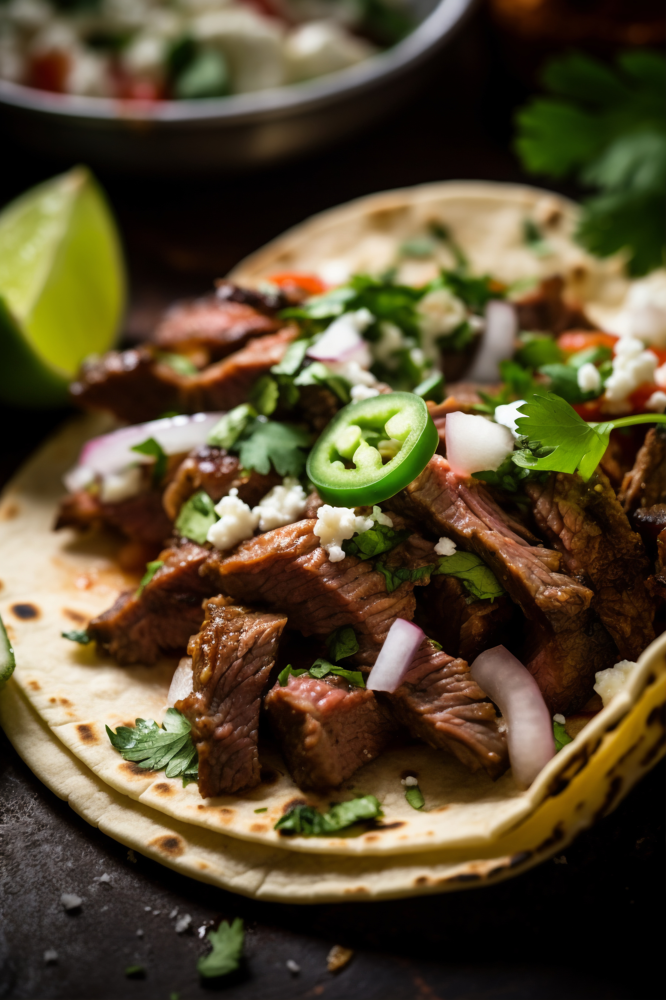

Home
Carne Asada Tacos

Image Designed by Magnific
Description
This recipe is great if you want an easy to make and delicous authentic
Mexican dish! Including are some great options to add extra flavors, ingredients,
and garnishes but dont assume thats the limit! Feel free to add additional topping
such as cheese, rice, beans, or more! These tacos are great to have on their own or
one of many dishes at a gathering.
Ingredients
- 1 1/2 lbs flank steak
- 1/3 cup olive oil
- 3 limes juiced - additional limes for garnish
- 4 garlic cloves - minced
- 1 cup fresh cilantro - chopped
- 1 teaspoon cumin powder
- 1/2 teaspoon chili powder
- Salt & pepper
- 2 Avacados
- 3 tbps cotija cheese
- 1/3 cup onion - finely diced
- 6 tortillas
Steps
Carne Asada Instructions
- Whisk all of the oil, lime juice, garlic, cilantro, cumin, chili powder,
salt, and pepper together in a bowl.Whisk all of the oil, lime juice, garlic,
cilantro, cumin, chili powder, salt, and pepper together in a bowl.
- Add the steak to a glass or non-reactive baking tray and pour the marinade on
top. Ensure both side of the steak are well coated, cover the baking tray with
plastic wrap and marinate for 1 to 4 hours. Alternatively, you could marinate
in a plastic bag.
- Heat a grill on medium-high heat. Add the carne asada and cook for 5 to 7 minutes
on each side. Remove the steak to a cutting board and let it rest for another
5 minutes.
- Using a sharp knife, slice the carne asada at an angle against the grain.
From there, you can further chop the carne asada into smaller pieces, if you'd
like.
Taco Instructions
- Once the Carne Asada is finished, slice it against the grain, then chop it
into small pieces.
- Use a spoon to mash the avocado and spread a large spoonful or two onto each
tortilla.
- Top the avocado with chopped carne asada, a sprinkle of cotija cheese, some
diced onion and fresh cilantro. Squeeze fresh lime juice on top.
Credit
Ingredients and steps from
Downshiftology with Lisa Bryan